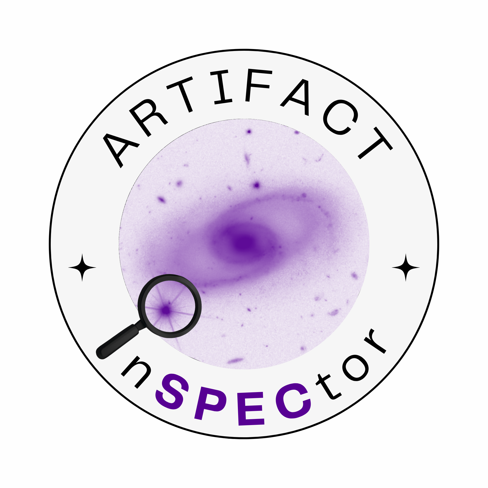
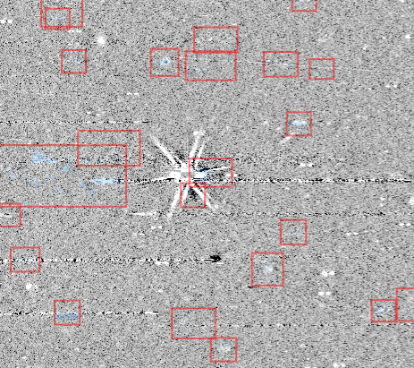
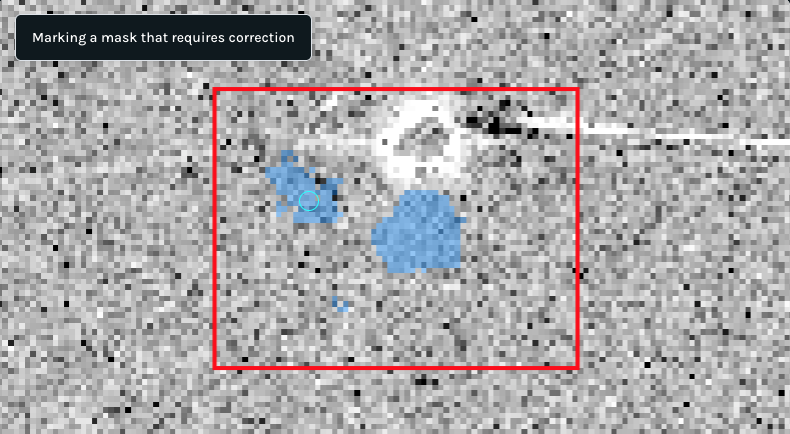
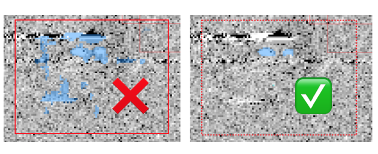
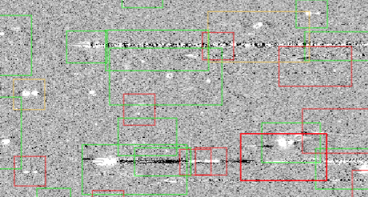
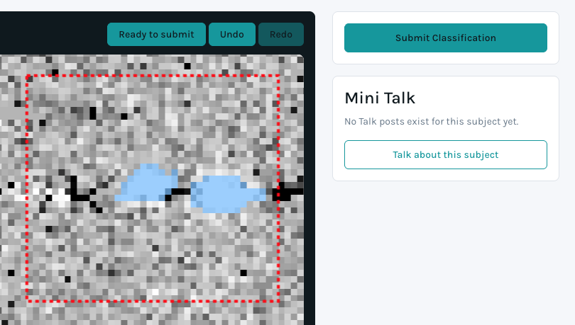
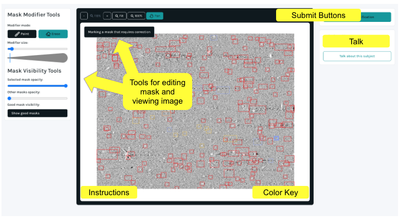

In this task, please edit the machine predictions of artifact maps that are incorrect. Citizen Scientists determined which masks were incorrect in the classic Zooniverse project Artifact InSPECtor. Now we will correct the masks needing editing. Artifacts are features that show up in the image that are not the astrophysical source data we are trying to capture. Your classifications on this European Space Telescope Euclid Q1 data will improve artifact detection models for future use with NASA’s Nancy Grace Roman Space Telescope.
In the task, you will see a large image covered in boxes. The boxes highlight different objects. By clicking on a box, you can zoom in on that object and see the mask.

Once you have selected a box, you can edit the mask. We want to mask out all of the white or black pixels belonging to the artifact, but not extra grey background pixels. You can add or remove pixels from the mask by selecting the modifier mode on the left. “Paint” adds pixels when you click, and “erase” removes them.
Below that, you can change how many pixels are affected when you click with the slider labeled, “modifier size.” You can also change mask opacities if you need to “see through” masks to the object.

In this task, we are focusing on artifacts. Recall from the classic Artifact InSPECtor that spectral stripes and emission lines are NOT artifacts. When you are editing each box, 1) remove any masking over a spectral stripe, or emission line and 2) edit masks on the artifact. Do not add any masks over spectral stripes or emission lines.
Spectral stripes are extended, black and white stripes, and emission lines are small blobs only a few pixels across. Artifacts are objects like the double blobs of a zeroth order source, stars and their whiskers, snowballs, or white lines that are going in a different direction than the spectral stripes. If you need examples, see the field guide on the classic Artifact InSPECtor workflow.

Red boxes need lots of edits, yellow have some edits submitted but could use a few more, and green are considered done editing, or “good.” You can toggle on the “good,” green masks at any time with the button to the left.
You can also add an object if there is no box covering it. However, keep in mind that you can extend masks past the edges of the boxes. The boxes are guides, not limits. Before you add a new object, please toggle on “good masks” to ensure it has not been previously detected or edited.

Once you are done working on a mask, click “ready to submit.” This will change the color of the box to violet. When you are done with your session, hit the “Submit Classifications” button to the right to send all of your “ready” mask edits to the research team!

The top panel provides options to zoom in or out and pan across the image. If you click “pan,” you will need to click it again when you are done to return to painting mode. You can pull up instructions at any time by clicking on the bottom left hand corner. The bottom right has a key of the box colors. If you have questions, reach out to the research team by clicking on the “Mini Talk” button. See more information about the project on the Zooniverse Artifact InSPECtor About pages. Enjoy your editing!